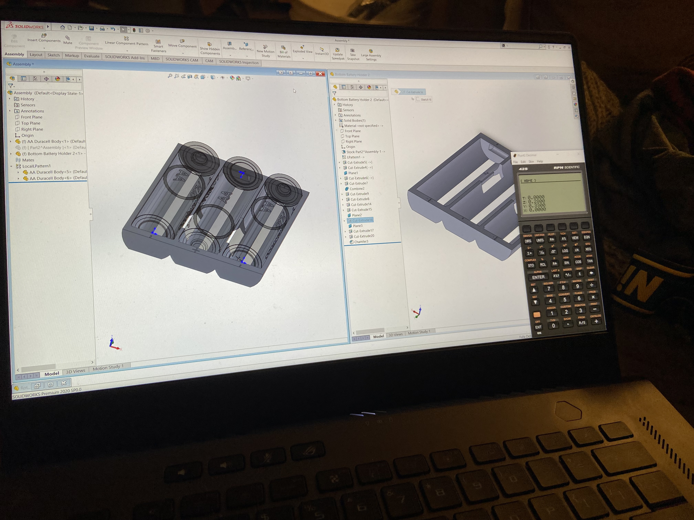

As some of you classic calculator nerds may know, the HP-35 happened to use a custom nickel-cadmium battery pack,
comprised of three separate cells in series. These cells are approximately AA sized (I never actually measured), but
if you don't want to destroy the original battery, the only option is to make your own.

So that is what I set out to do. With only a pair of micrometers (and SolidWorks), I set about modeling and then 3-D
printing my own replacement, designed for AA batteries. This design includes interconnects for the different cells, as
well as holes for the contacts. The design went through a few revisions before becoming what can be seen here,
including changing shape and size of the wire connections, adding plus and minus signs, etc. before being printed. The
printed result is the final (ish, there are still some things I need to change) design.